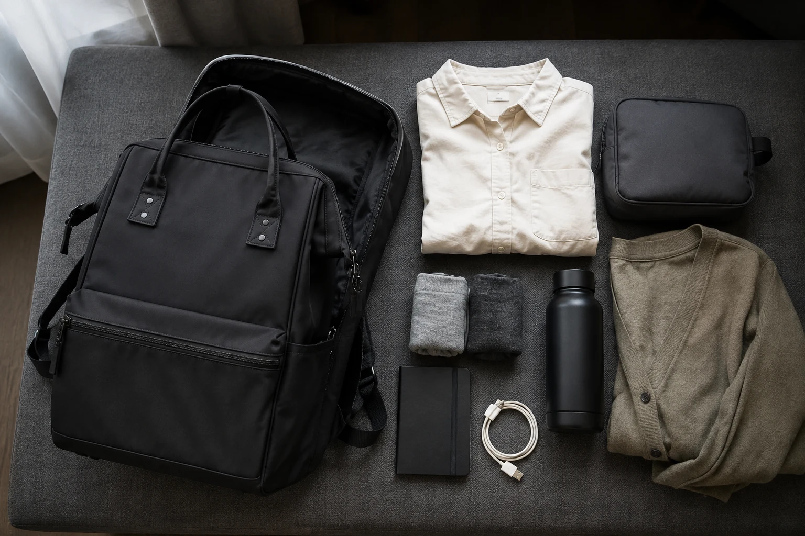

1박 2일 여행 백팩 짐싸기: 꼭 필요한 것만 담는 체크리스트

짧은 여행일수록 ‘혹시 필요할지 모르는 물건’을 많이 담기 쉽습니다. 1박 2일 짐싸기의 기준은 가방을 가득 채우는 일이 아니라 일정 중 언제 무엇을 쓸지 분명히 정하는 것입니다. 숙소 비품, 이동 수단의 규정, 날씨를 먼저 확인하면 불필요한 짐을 줄일 수 있습니다.
일정과 날씨를 한 줄씩 적어보세요
첫날 이동과 활동, 숙박, 둘째 날 귀가까지 장면을 짧게 적습니다. 야외 일정이 많은지, 격식을 갖춘 옷이 필요한지, 비 예보가 있는지를 확인하세요. 이 목록을 기준으로 옷과 신발, 우산을 고르면 막연한 불안 때문에 추가하는 물건이 줄어듭니다.
필수품을 다섯 묶음으로 나누세요
준비물을 한눈에 볼 수 있도록 가방에 넣기 전에 펼쳐 둡니다. 개인 상황에 따라 필요한 물건은 다르지만, 아래 다섯 묶음으로 시작하면 빠뜨린 것이 있는지 확인하기 쉽습니다.
- 의류: 다음 날 옷, 속옷, 양말, 계절에 맞는 얇은 겉옷
- 세면: 숙소 비품을 확인한 뒤 필요한 소용량 제품
- 전자기기: 휴대전화, 충전기, 필요한 케이블과 보조배터리
- 이동: 지갑, 신분증, 예약 정보, 교통수단에 필요한 물건
- 상황별 준비: 우산, 개인 상비용품, 일정에 필요한 소품
항공편이나 특정 교통수단을 이용한다면 보조배터리와 액체류 등 반입 규정이 달라질 수 있습니다. 출발 전 운영사의 최신 안내를 직접 확인하세요.
파우치는 목적별로, 내용은 보이게 담으세요
다음 날 입을 옷을 한 묶음으로 만들고, 세면도구는 누수에 대비해 밀폐 가능한 별도 파우치에 둡니다. 충전 케이블은 전자기기 파우치에 모으되 너무 팽팽하게 감지 않습니다. 파우치의 수를 늘리기보다 한 번에 찾을 수 있는 분명한 용도를 정하는 것이 중요합니다.
무게와 꺼내는 순서로 자리를 정하세요
가방 형태가 허용한다면 비교적 무거운 물건은 등 쪽에 가깝고 흔들리지 않는 수납부에 둡니다. 이동 중 자주 꺼낼 지갑, 티켓, 이어폰은 바깥쪽의 안전한 포켓에, 숙소에 도착해야 쓰는 옷과 세면도구는 안쪽에 둡니다. 액체류와 전자기기는 서로 떨어뜨려 두는 편이 좋습니다.
마지막에는 지퍼가 억지로 닫히지 않는지, 한쪽만 볼록해지지 않는지 확인하고 실제로 메어 봅니다. 불편하다면 가방을 바꾸기 전에 가장 사용 가능성이 낮은 물건부터 하나씩 덜어내세요.
출발 전 1박 2일 체크리스트
- 숙소 비품과 날씨를 확인했나요?
- 일정에 없는 여벌 옷을 덜어냈나요?
- 액체류를 밀폐 파우치에 분리했나요?
- 충전기와 케이블이 기기에 맞는지 확인했나요?
- 이동 수단의 반입 규정을 확인했나요?
- 가방을 실제로 메고 지퍼와 균형을 점검했나요?
평소 가방 정리가 어렵다면 여행 전 매일 짐을 줄이는 수납 루틴부터 적용해 보세요. 여행용 백팩을 새로 비교할 때는 단순한 용량 숫자뿐 아니라 내부 수납과 실제 제품 사진을 함께 확인하는 것이 좋습니다.
참고·안내
- Himawari 제품별 수납 정보
- 교통수단의 반입 규정은 이용 전 해당 운영사의 최신 안내를 확인해 주세요.
자주 묻는 질문
1박 2일 여행에는 몇 리터 백팩이 필요한가요?
계절, 일정, 숙소 비품과 개인 짐에 따라 달라 한 가지 용량으로 정하기 어렵습니다. 실제 준비물을 펼쳐 보고 제품의 내부 치수와 수납 구성을 비교하세요.
여행 백팩에 옷은 어떻게 담나요?
다음 날 입을 한 벌을 한 묶음으로 만들고 작은 의류 파우치에 넣으면 숙소에서 찾기 쉽습니다. 소재에 따라 말기보다 접기가 적합할 수 있습니다.
보조배터리와 액체류는 어디에 넣나요?
이동 수단의 반입 규정을 먼저 확인하세요. 액체류는 밀폐 가능한 파우치에 분리하고, 전자기기는 압력과 누수의 영향을 덜 받는 곳에 둡니다.